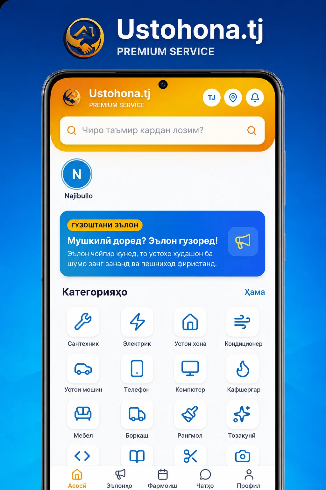
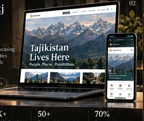
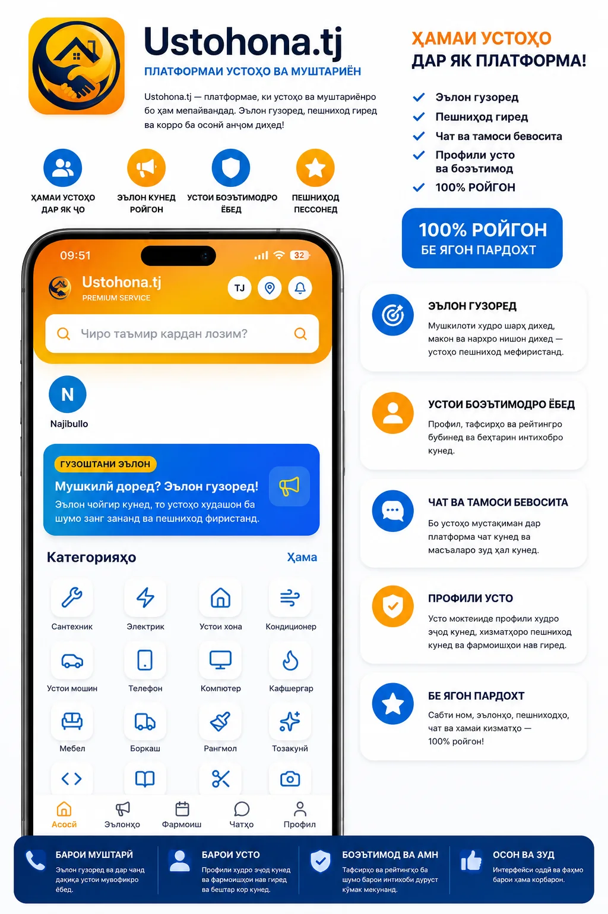
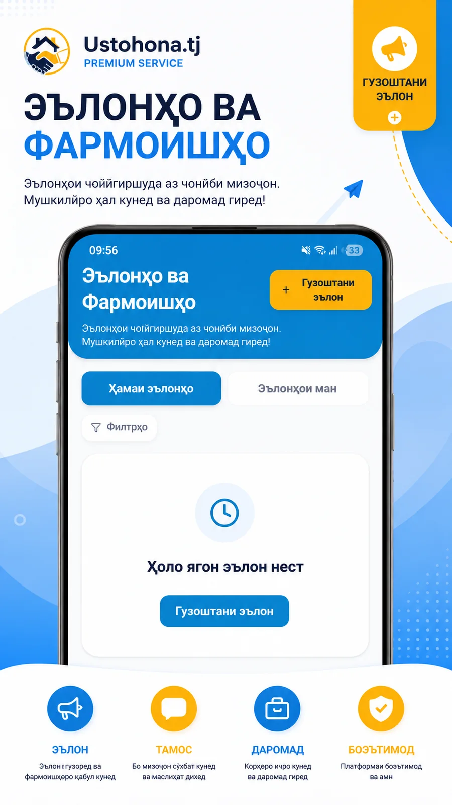

Web Platforms
Professional responsive platforms, marketplaces, dashboards, portals and multilingual products with frontend, backend and database logic.
FULL-STACK • RESPONSIVE • PRODUCTIONI’m Najibullo, a 16-year-old full-stack and mobile developer and founder from Tajikistan. I build professional web platforms and Android/iOS applications — from product strategy and interface design to backend, testing and launch.
I’m 16 and already building real products as a founder and developer. I work across web, Android and iOS, turning ambitious ideas into professional digital products.
My work combines product strategy, interface design, frontend and backend engineering, mobile product thinking, testing and launch discipline into one end-to-end build process.
More About Me →Rooted in TajikistanBuilding locally for a global tomorrow.
Driven by peopleTechnology should serve people.
Focused on impactMeaningful products. Real change.
Always learningA better, more connected tomorrow.
“Our people. Our potential. A brighter tomorrow.”— NAJIBULLO
I can take a product from idea to a launch-ready version across web and mobile, keeping product thinking, design, engineering and QA in one coherent build process.
Professional responsive platforms, marketplaces, dashboards, portals and multilingual products with frontend, backend and database logic.
FULL-STACK • RESPONSIVE • PRODUCTIONMobile applications built around real user flows, authentication, APIs, data, notifications and launch-ready product structure.
ANDROID • API • PRODUCT UXProfessional mobile experiences for iPhone/iOS with the same product logic, visual consistency and quality expectations as the web product.
iOS • MOBILE UX • INTEGRATIONDiscovery, UX/UI, frontend, backend, database, testing, optimization and launch — handled as one complete product workflow.
IDEA → DESIGN → BUILD → QA → LAUNCHFor tightly scoped MVPs and launch-ready prototypes, I can often deliver in roughly 3–7 days. Larger platforms are estimated by scope, integrations, content and testing requirements.
Two platforms. One bigger purpose — a more connected, more capable Tajikistan.
View All Projects →Trusted Professionals
for Every Home.
A modern platform that connects people with trusted local professionals across Tajikistan — from home repairs to professional services.

Discover a More
Connected Tajikistan.
A digital ecosystem created to organize useful services and information into one coherent product with clear discovery and scalable structure.

Understand the problem, people, and opportunity.
Shape the strategy, features, and design.
Write clean code, iterate fast, and ensure quality.
Ship, learn, measure, and create real impact.
I treat the stack as one product system, not a wall of logos. Every layer has a job, an interface and a reason to exist.
Interface, accessibility, state and responsive product behavior.
Business logic, authentication, APIs and product workflows.
Reliable models, search, persistence and scalable data access.
Deployments, environments, observability and production discipline.
AI-assisted discovery, automation and intelligent product layers where they add real value.
“Better products
build brighter futures.”— Najibullo
This gallery uses real Ustohona product screens supplied from the project library. I publish only product facts and usage numbers that can be verified.
No invented users, orders, masters or traffic numbers.

These are lightweight portfolio simulations of documented product flows — not live production data.
Choose a service, then run the simulation.
The live TajLife case study documents 34 service areas; this demo shows a small interactive subset.
The best digital products are not loud. They are precise, fast, trustworthy and memorable. I combine product thinking, visual craft and engineering discipline into one build.
Clear hierarchy, deliberate typography and less visual noise make the product feel expensive and easy to trust.
Animation guides attention, reveals structure and adds depth — without turning the interface into a game.
Responsive delivery, performance budgets, accessibility and production QA protect the experience on real devices.
I’m open to new opportunities, collaborations, and meaningful projects that create value for people and a brighter Tajikistan.